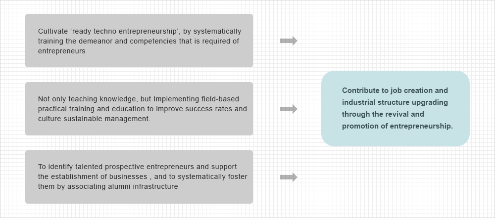
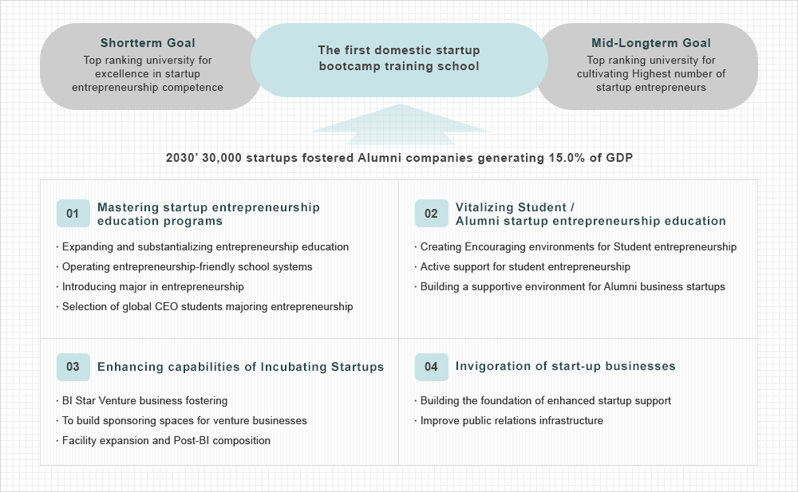
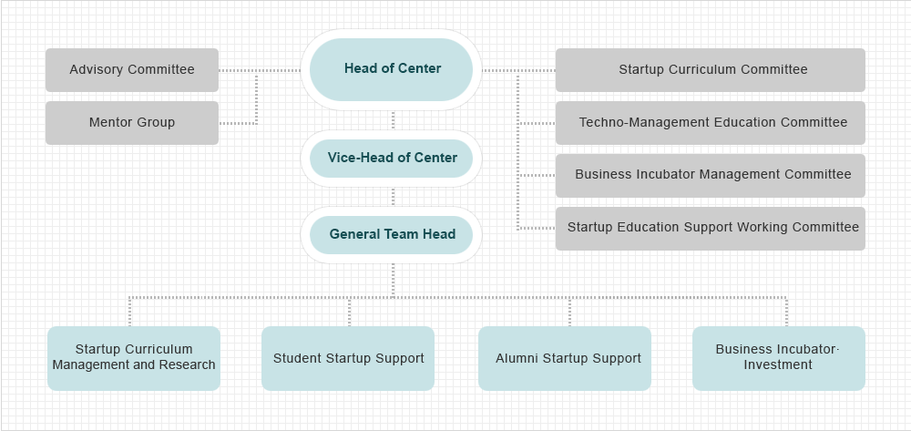
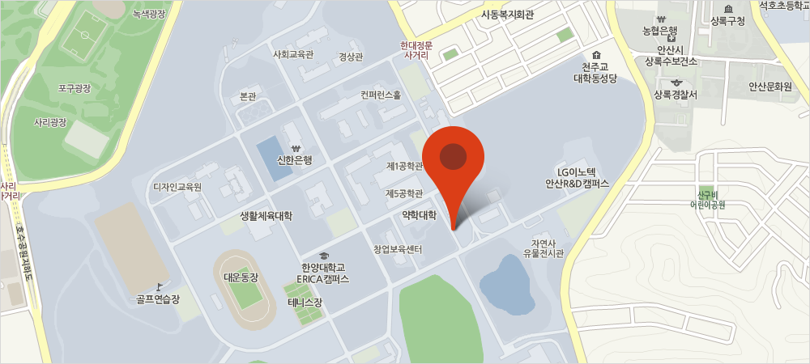

About
In commemoration of the 70th anniversary of Hanyang University, The global entrepreneurship center has been established based on the initiative of the alumni entrepreneurs and government support.
With it’s goals in fostering prospective entrepreneurs · general entrepreneurs as well as the student entrepreneurs to become world class entrepreneurs.
Continuous succession and development of founding principles and practical scholasticism of Hanyang University that has been a hub of national development by cultivating practical talent resources.


Vision & Mission

- 1. Best academia-industry infrastructure
- 2. Global entrepreneurship support centers (Silicon Valley, New York and Shanghai)
- 3. Ample business network (280,000 alumni)
- 4. Superior academia-industry cooperation expertise
- 5. Hanyang angel fund / Hanyang youth startup fundZ
Major Business
-
- Education
-
Lectures focusing on practice rather than simply delivering knowledge
ㆍRegular courses on start-up
ㆍIntroducing major in entrepreneurship(2015)
ㆍTechno-Management (Essential tech- major startup courses)
ㆍHanyang Start-up Academy, Hanyang Tech Ventures, Venture Business CEO Academy
-
- Training
-
Instill students’ startup drive and cultivate their competence by running a practical education and training program that students participate in directly
ㆍStart-up competitions (scthool, national)
ㆍEntrepreneurship camp (twice yearly)
ㆍStart-up festival
ㆍ3D printing education, idea realization and business development support
ㆍStartup Festival, Company visits ,etc.
-
- Networking
-
Teach the alumni’s knowledge and practical wisdom through regular mentoring with successful entrepreneurs and the experts of each industry
ㆍEntrepreneur Forums (every quarter, place of startup information sharing)
ㆍMentoring Café (mentor roundtable by topic)
ㆍAlumni-Students Mentorship Program, etc.
-
- Incubating
-
Provide startup preparation space and mentoring and comprehensive startup incubating to promising venture companies, startup clubs, student
entrepreneurs, etc.
ㆍIdentifying and nurturing promising start-ups
ㆍRun Venturing Space Sponsored by Alumniv
ㆍStartup clubs, student entrepreneur excavation
ㆍExpansion of investment-linked infrastructure
-
- Research & Cooperation
- ㆍResearch and development of practice program to spread entrepreneurship ㆍExchange and joint program with the entrepreneurship centers at home and abroad
History
-
- 2009
-
ㆍThe first national university entrepreneurship center
ㆍEntrepreneurship training programs offered as undergraduate electives
ㆍEntrepreneurs forum
-
- 2010
-
ㆍEntrepreneur camp
ㆍYES reader contest co-sponsored entrepreneurship
-
- 2011
- ㆍNational university students production technology commercialization contest 2012
-
- 2012
-
ㆍHanyang start-up academy
ㆍIntegration of start-up incubator center organization
ㆍSeoul campus CEO training project organizers selected
-
- 2013
-
ㆍSelect the global market-type supporting business start-up R & D BI partners
ㆍThe general public, college co-founded the academy project selection
ㆍGlobal entrepreneurship education programs selected
-
- 2014
-
ㆍSelecting entrepreneur business center in the university.
ㆍLeaders in industry-university cooperation (LINC) development project selection
ㆍSmart-creation business site selection
-
- 2015
-
ㆍOperate major in entrepreneurship
ㆍEstablish entrepreneurship center in New York, Silicon Valley and Shanghai
ㆍAwarded the best university of entrepreneurship education by the Minister of Education
-
- 2016
- ㆍParticipate in ‘HANYANG STARTUPS’ panel at CES 2016
Organization
The organization of Center for Global Entrepreneurship acts as the control tower of venture · startup support and is consisted of the Head of Center, Vice-Head of Center, General Team Head, and staff members. It also has advisory committee, mentor group, and various small committees to run the center smoothly.

Directions

-
- Address and Contact Information
-
HANYANG UNIVERSITY
Center for Global Entrepreneurship
HIT #504, 222 Wangsimni-ro, Seongdong-gu, Seoul, 133-791, Korea
Tel: +82-2-2220-2861cFax: +82-2220-2869 | Email: center@hanyang.ac.kr
-
- Public Transportation
-
Subway : Exit No.2 of Hanyang University Station, Subway Line No.2
Blue Bus: 302, 410
Green Bus: 2012(Cheongnyangri), 2013, 2014, 2222


- Angel Investment Fund
- Startup Info